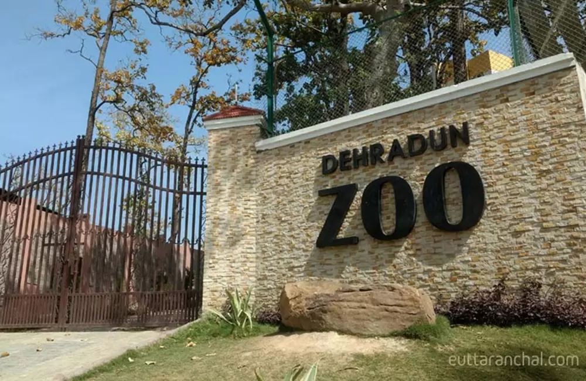
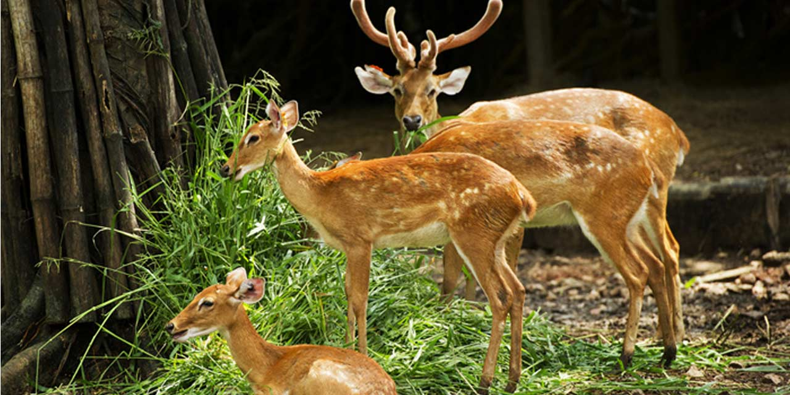
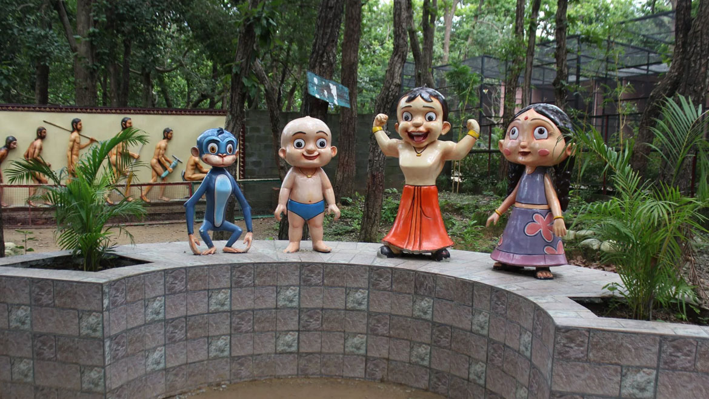
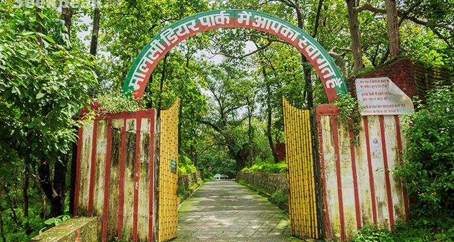
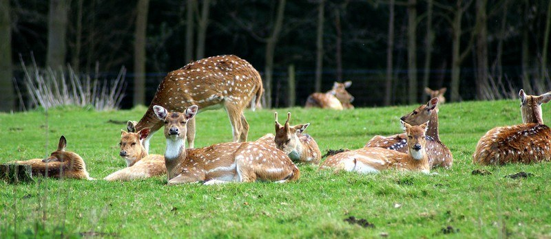

Malsi Deer Park (officially known as Malsi Deer Park or Dehradun Zoo) is a popular mini-zoo and nature park located at the foothills of the Shivalik range, about 10 km from Dehradun city center on the way to Mussoorie. Spread over lush green surroundings, the park is home to a variety of deer species (like spotted deer, sambar, barking deer), peacocks, leopards, Himalayan black bear, crocodiles, and many birds — making it an excellent spot for families, kids, and wildlife lovers to enjoy a peaceful day close to nature.
The park features well-maintained enclosures, walking paths shaded by tall trees, small waterfalls, picnic spots, and a children’s play area. A highlight is the natural stream and small man-made lake where visitors can relax and feed the deer (with permission). The serene environment, fresh mountain air, and sightings of free-roaming peacocks add to the charm. It’s a perfect half-day outing from Dehradun, especially combined with nearby attractions like Robber’s Cave or Sahastradhara.
October to March for pleasant weather and active animals; early morning or late afternoon to see animals at their best and avoid midday heat.
Deer enclosures, spotted & barking deer, peacocks roaming freely, small waterfalls, picnic areas, children’s play zone, and peaceful forest setting.
Carry water & snacks (limited food options inside), wear comfortable shoes, avoid feeding animals without permission, go early to see more wildlife activity, and combine with nearby Robber’s Cave or Sahastradhara.
"Malsi Deer Park is where gentle deer dance through green shadows and peacocks call from the trees — a quiet wildlife retreat that brings nature’s innocence and serenity right to Dehradun’s doorstep."